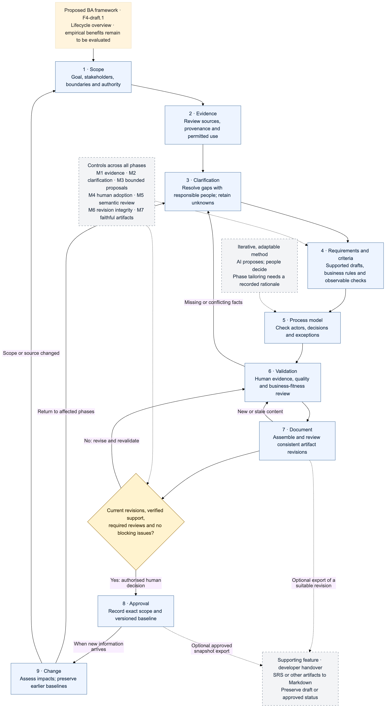
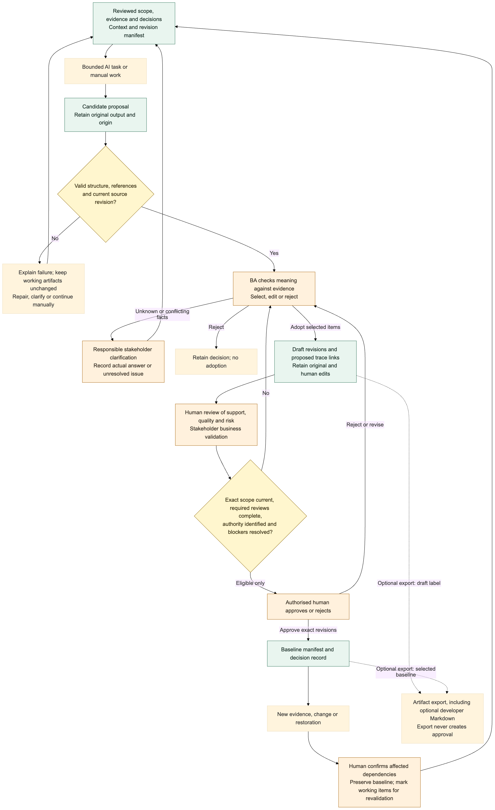
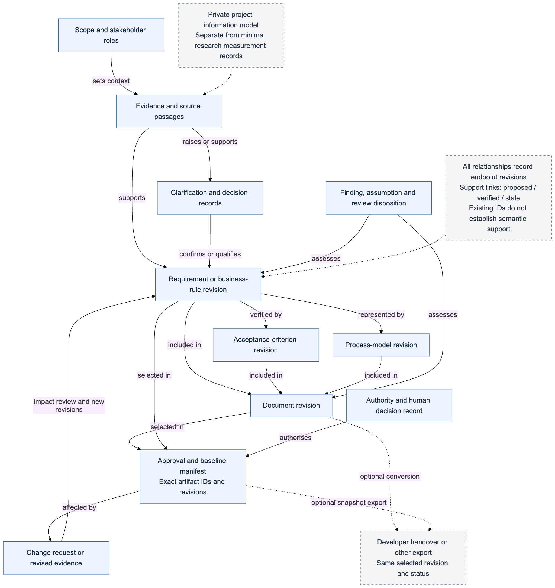

Lifecycle
Core stages, feedback routes and optional handover.
Framework F4-draft.1
An iterative method for evidence-grounded, human-governed Business Analysis with AI assistance
The original three themes—adaptive prompting, ethical safeguards and human-in-the-loop work—remain the research motivation. F4-draft.1 now specifies the actual BA activities, decision rights and artifact relationships.
Define scope, review sources and distinguish confirmed information from assumptions, contradictions and unknowns. AI may propose questions, but responsible people supply business decisions.
Draft requirements, rules, stories, acceptance criteria and process models from reviewed material. Check their clarity, testability, evidence support and stakeholder coverage.
Assemble faithful documents, record approval against exact revisions, and revisit affected items when evidence or requirements change. AI cannot grant approval.
Lifecycle: Scope → evidence → clarification → requirements and criteria → process model → validation → document → approval → change. This is an iterative guide, not nine compulsory screens. Process modeling may be tailored with rationale; change runs when triggered. Developer handover is an optional export.
The framework documents inputs, responsibilities, stopping conditions and failure routes for each mechanism.
Select relevant sources with provenance; keep unanswered or conflicting business questions visible.
Give AI defined tasks and reject malformed or stale outputs. A BA selects, edits or rejects proposals before they become drafts.
Inspect quality and verify that a cited source actually supports a requirement; a citation alone is not proof.
Bind approval to specific artifact revisions. Relevant changes trigger impact review and revalidation.
Exports preserve the selected content and its true draft or approved status. Generated additions require review.
Stakeholders confirm business meaning. An authorised person makes approval decisions; model output remains advisory.
These F4-draft.1 figures explain the proposed method. They do not assert that every rule is already implemented in BA Mate or empirically validated.

Core stages, feedback routes and optional handover.

Proposal review, human decisions, eligibility and approval.

How sources, decisions, artifacts and revisions relate.
The draft protocol compares manual requirements work (A), generic AI work (B) and framework use through BA Mate (C) on comparable fictional cases. The primary planned contrast is C against B.
Practical use and feedback will inform usability and refinements. Differences in projects, models and experience mean this stream does not by itself establish a controlled effect.
BA-MATE-SKILL is assessed as a separate portability and formative route. Its outcomes are not automatically pooled with the application study.
Current boundary: The evaluation design remains a pre-evaluation draft. Study approvals, frozen treatments, qualified releases, participant records and measured findings must be confirmed before results are reported.
Read the current project status and find the available skill and beta information.